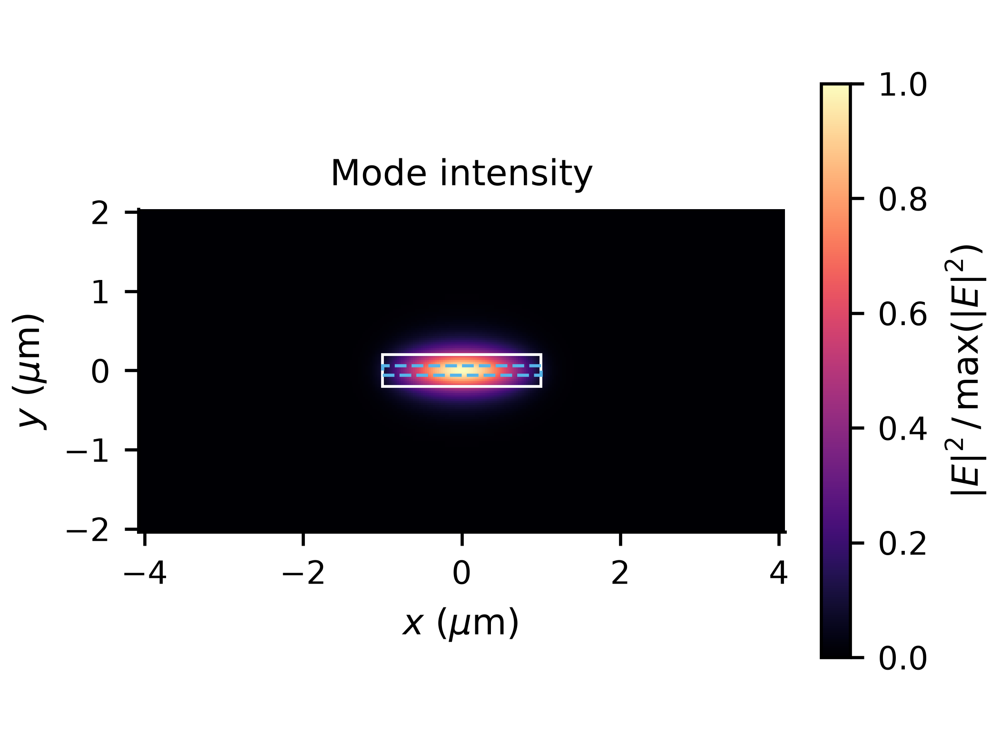
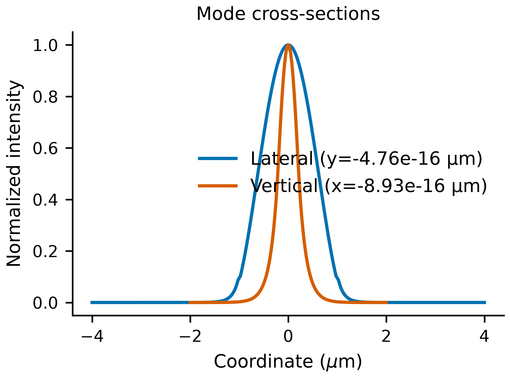
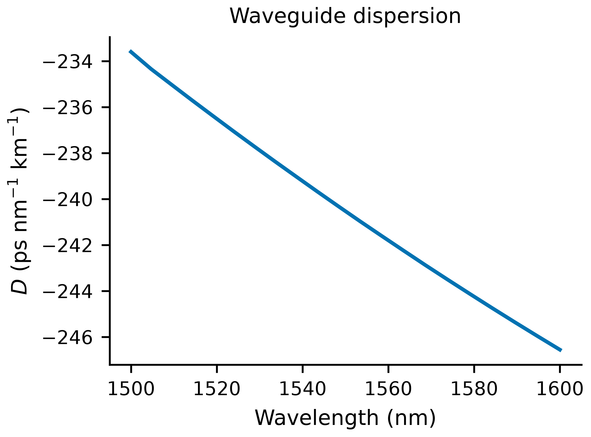
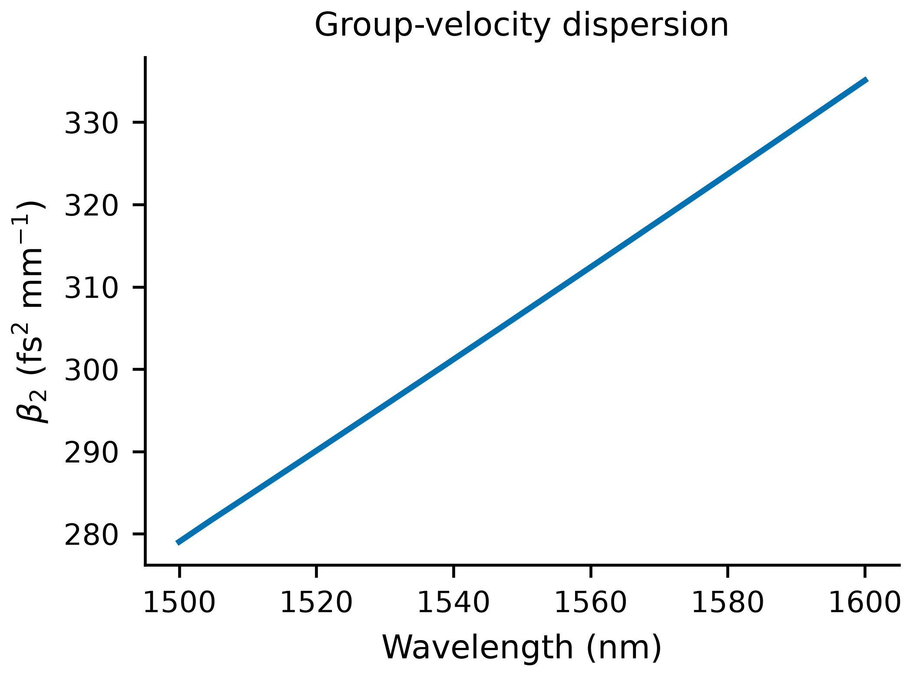

Figure formatting is ready for manuscript preparation. Physical calibration, convergence and interpretation remain part of the study.
Edit and regenerate
Edit figures.yaml for titles, labels, limits, scales, colors, markers, fonts and export sizes. Run regenerate.py with the project Python, or rerun inpamp figures ... --replace --show. Replotting uses existing data and needs no Ansys license.
PDF and SVG preserve vector lines/text; field maps are embedded rasters at the selected DPI. CSV contains plotted samples. Every figure has a caption explaining its scope.
| neff_real | 3.260964 |
|---|
| neff_imag | 0 |
|---|
| active_power_overlap | 0.2393092 |
|---|
| effective_area_um2 | 1.282743 |
|---|
Mode intensity

Native MODE intensity, normalized to its peak. White: effective core; dashed blue: configured active stripe when geometry metadata is available. Display normalization does not change the exported field. A scalar intensity map alone does not establish polarization or single-mode operation.
PNG · PDF · SVG · CSV
Mode profiles

Slices through the grid points nearest x=0 and y=0, sharing the same global peak normalization. These are intensity profiles, not integrated power fractions.
PNG · PDF · SVG · CSV
Waveguide dispersion

Native tracked-mode dispersion D. This is the straight effective SOA waveguide, not the SiN resonator integrated dispersion. Fixed-index materials include waveguide dispersion but omit physical material dispersion.
PNG · PDF · SVG · CSV
Waveguide beta2

Algebraic conversion of exported D: beta2 = -lambda² D / (2πc). Positive beta2 is normal dispersion; negative beta2 is anomalous. This conversion supplies no resonator frequencies or soliton prediction.
PNG · PDF · SVG · CSV